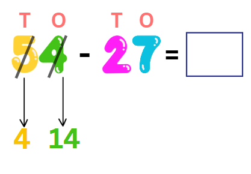

Subtraction in a row:
Let’s walk through the same examples with a focus on working step-by-step while keeping the numbers in a line.
Subtraction Without Borrowing
When no borrowing is needed, subtraction is straightforward.
Let's use 54 - 23 as an example:
-
Separate the Place Values:
54 = 5 tens and 4 ones.
23 = 2 tens and 3 ones.
-
Subtract the Ones:
Subtract the ones directly: 4 - 3 = 1.
-
Subtract the Tens:
Subtract the tens: 5 - 2 = 3.
-
Combine the Results:
Put the tens and ones together: So, 54 - 23 = 31.
Subtraction With Borrowing
Now let’s handle borrowing step-by-step, keeping the numbers in a line. We’ll use 54 - 27 as the example.
-
Separate the Place Values:
54 = 5 tens and 4 ones.
27 = 2 tens and 7 ones.
-
Subtract the Ones:
Look at the ones place: 4 - 7.
Since 4 is smaller than 7, you borrow 1 ten from the tens place.
-
Borrowing:
The 5 tens becomes 4 tens.
Add the borrowed 1 ten to the ones place: 4 ones + 10 = 14 ones.

-
Subtract the Ones Again:
Now subtract: 14 - 7 = 7.
-
Subtract the Tens:
Subtract the tens: 4 - 2 = 2.
-
Combine the Results:
Put the tens and ones together:
So, 54 - 27 = 27.